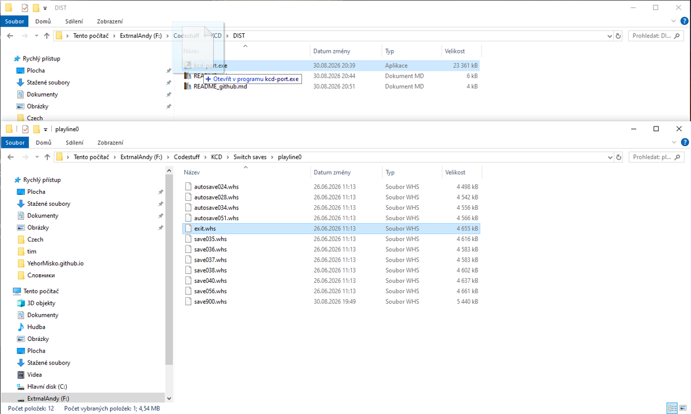
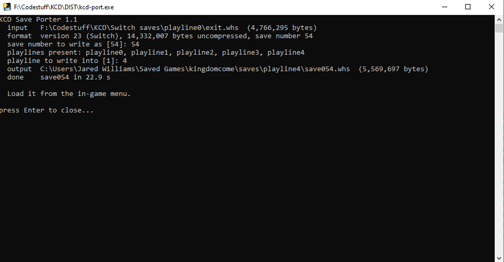
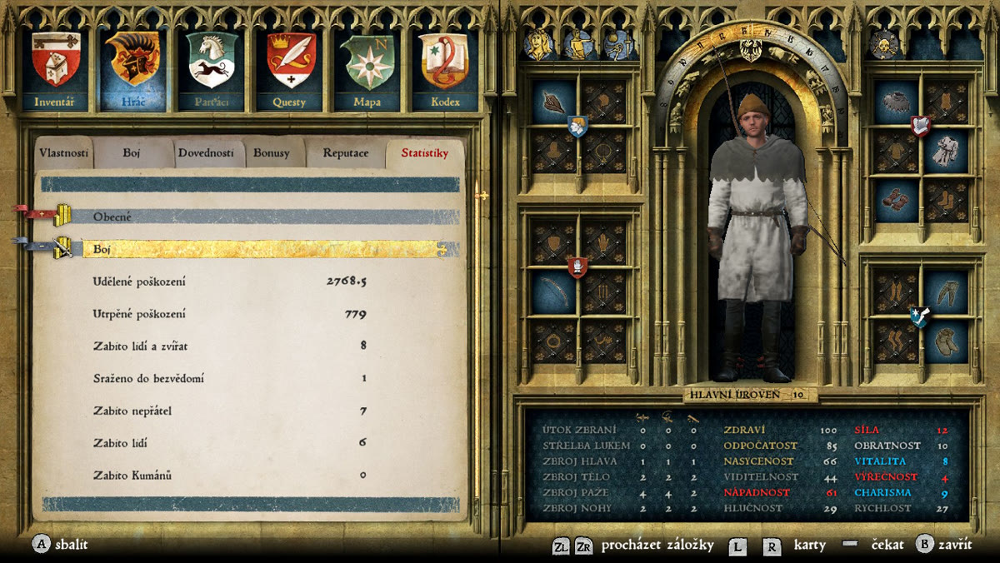
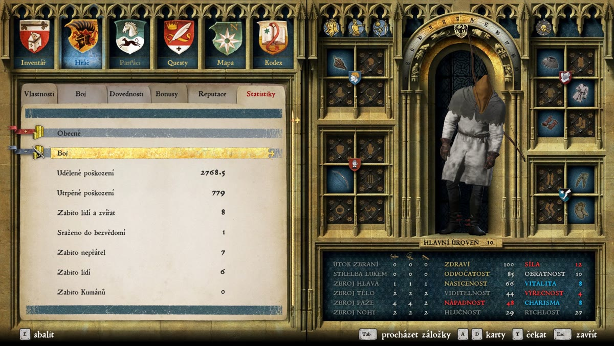
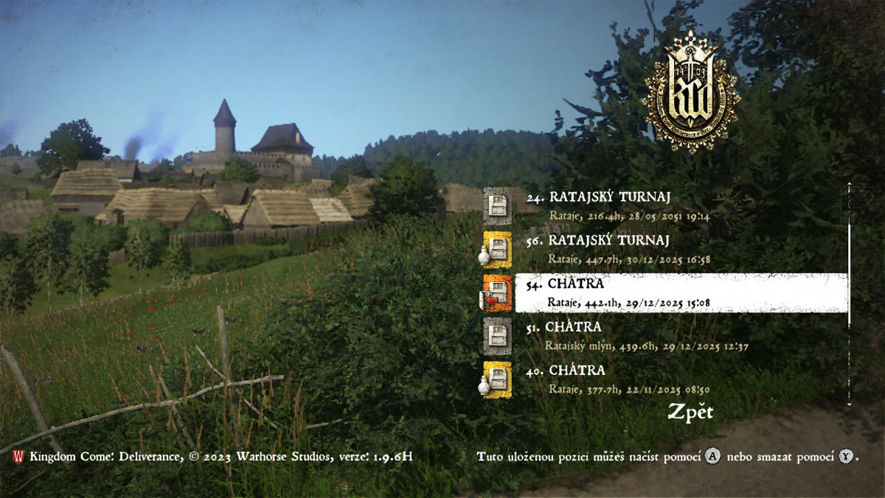
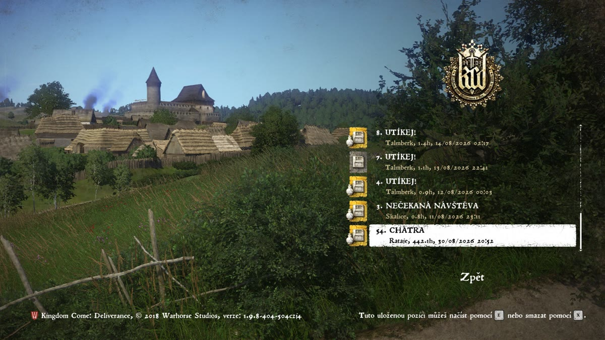
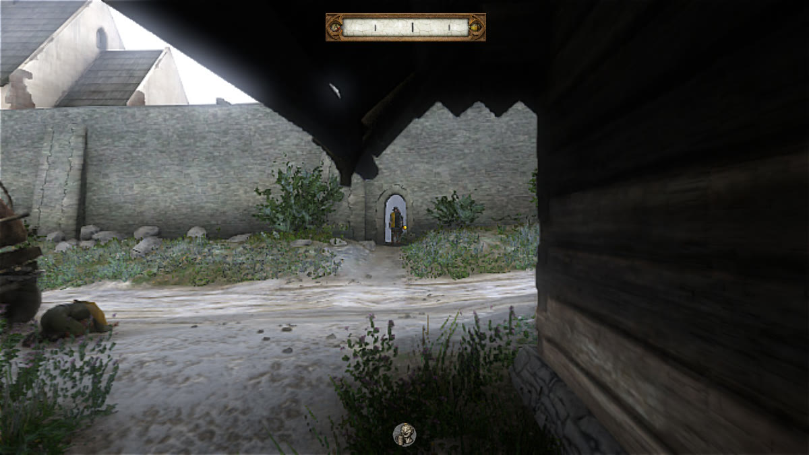
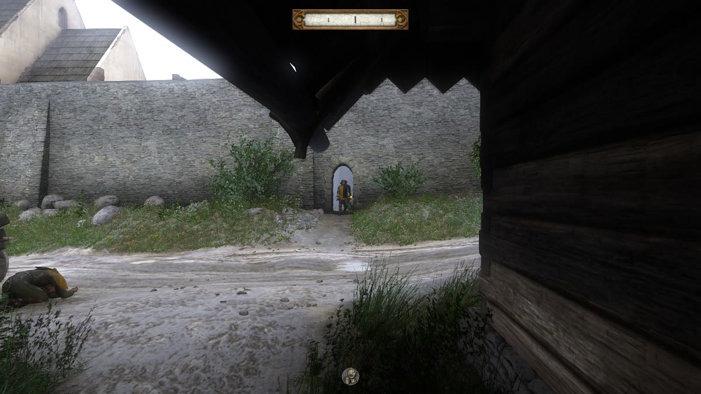

KCD Switch → PC Save Converter
Reverse-engineering an undocumented CryEngine save format | Python · Windows
Kingdom Come: Deliverance shipped on the Nintendo Switch, but a Switch save won't load on the PC version: the two builds serialise the same data in completely different ways. This is the story of reconstructing that format byte by byte, and the tool that carries a full Switch playthrough onto PC.

.whs onto the exe
Usage is a drag-and-drop: drop a Switch .whs onto the exe and about 20 seconds later it's a PC save you load from the in-game menu. The converter checks its own output before it writes anything, so a bad conversion fails loudly instead of producing a save that silently starts a new game.
The Challenge
The PC and Switch builds of Kingdom Come: Deliverance write their saves differently. The PC uses a verbose layout where every field is framed as [u16 tag][u32 size][payload]; the Switch uses a compact one that packs the same fields positionally, with no framing at all. The PC executable has no reader for the compact form, so a Switch save doesn't error, it silently starts a new game. Converting means reconstructing every field boundary the compact form leaves implicit, across a world-state table of roughly 2,700 entities where a single wrong field width desynchronises everything after it. (The outer container is CryEngine's public XMLCPB format, zlib blocks plus an 0XBP + MD5 trailer, and was the easy part; the records inside are Warhorse's own and undocumented.)
The Solution
Differential reverse engineering, with the game itself as the oracle. The breakthrough was an engine diff: load a converted save, immediately save in-game, and compare the converter's output against the file the engine just wrote from the same state. Of ~2,700 entity records, 2,584 come out byte-for-byte identical to the engine's own output and 50 differ by a single byte, against a measured 3-byte noise floor, a reproducible fidelity check far stronger than any screenshot. That oracle, plus bisection-by-substitution and reading the game's own load log for the verdict, surfaced 8 distinct serialisation defects, nearly all the same root error: a rule fitted to the one short save that loaded early, which doesn't hold for a late-game playthrough. The tool ships as a 24 MB drag-and-drop exe (or a CLI), validates its own output before writing, and converts a save in about 20 seconds.
The same save, before and after. Switch on the left, PC (post-conversion) on the right. Hover any shot to see it full size.


Damage dealt (2,768.5), damage taken (779), 8 kills and the full equipped loadout come across identically, the stored, deterministic values. (A couple of derived stats such as Conspicuousness recompute on load and differ slightly, which is expected.)


The converted save shows up in the PC load list and loads. One honest quirk: a Switch exit save currently comes across re-typed as a manual "Saviour Schnapps" save on PC. That is how the converter writes it today, not something the format requires.


Same save, same location and view. The world and your position transfer deterministically; ambient NPCs run on live schedules the game re-simulates on every load (you'll see the same drift reloading a native PC save), so catching them in the exact same place, as here, currently takes a little luck. Full 1:1 moments do happen on some saves, and reducing that variance is ongoing work.
Built with AI assistance, stated plainly: the converter is around 970 Python files and every one of them was written with Claude Code, over roughly two months. What was mine was the method and the judgement, the hundreds of manual load tests (the only real oracle is running the game), devising the engine-diff comparison that broke the project open, and catching a silent data loss every automated check had passed: Henry came over from the Switch drunk and loaded on PC sober, a dropped 117-byte record that turned out to carry status effects. In one line: the AI wrote the code; I ran the experiments, chose what to measure, and caught what the code couldn't see.
Credit where it's due: the container is CryEngine's XMLCPB serializer, whose source Crytek made public, reading it confirmed the outer format byte for byte. Pulling saves off the Switch uses JKSV. No prior Kingdom Come save tooling existed to build on.
Format spotlight: a "constant" that wasn't
Most of the eight defects were the same shape: a value that looked fixed in every save on hand, and wasn't. A 35-byte run I had hardcoded as a constant inside the player's component record turned out to end in two length-prefixed frames, and the byte pairs that belong inside them were being written after them:
0x0807 sub-record, 117 bytes -- the player's component record
[24 B value][7 B var]
[01 e7 94 10][19 zero bytes]
[u16 0x0003][u32 6 + 8N] ← N = how many 8-byte pairs follow
[u16 0xaa8b][u32 8N]
[N x 8 bytes] ← each pair is [u32 2][float]
[TLV blocks] ← 0x11c4 = 3 floats, 0x0310 = u32, 0x0311 = u8
I never recovered names for tags 0x0003 and 0xaa8b: they are
Warhorse's own ids and nothing public maps them. What is provable is the arithmetic. The
two lengths are always 6 + 8N and 8N, so those four bytes and
those four bytes are frame headers over the pairs that follow. The pairs themselves decode
cleanly as a u32 and a float, and the floats are
+FLT_MAX and -FLT_MAX, which is what an untouched min/max range
looks like before anything has been written into it.
The bug is two bytes wide. Below, the same record from two saves written about eight seconds apart: mine, and the game's own:
bytes 54..70 of 117
broken 03 00 | 06 00 00 00 | 8b aa | 00 00 00 00 | 02 00 00 00 ff ff 7f 7f
^^ "6" ^^ "0" 16 bytes inside no frame
engine 03 00 | 16 00 00 00 | 8b aa | 10 00 00 00 | 02 00 00 00 ff ff 7f 7f
^^ 6 + 8x2 ^^ 8x2 the same 16 bytes, framed
6 + 8×2 = 22 = 0x16, 8×2 = 16 = 0x10. Every save I had at
the time held N = 0, so both lengths sat at their empty values and read as part
of the constant. The emitter kept writing that empty-case header and appending the pairs
after it, so both frames declared themselves empty while 8N bytes trailed and
the PC reader walked off the end. Framing them correctly also revived a record that had been
dropped as "unencodable" for weeks, the one carrying Henry's status effects.
The comparison is a stronger check than it looks. The build that produced the engine's save
had dropped this record entirely, so the game rebuilt it from defaults with no input from
me: those frame headers are the engine's own opinion, and the framing matches mine byte for
byte. The only difference across the whole record is the 0x11c4 triple, where
mine carries the values off the Switch (16.87 / 2.55 / 72.5) and the engine wrote its
defaults (20.0 / 0.0 / 100.0). That difference is expected, not a defect.